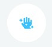
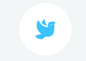
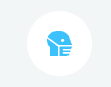
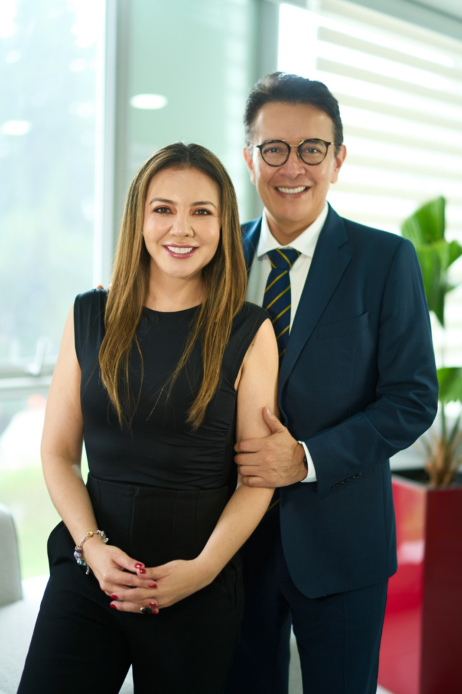

TODO TIPO DE PELO
Analizaremos tu tipo de pelo para darte un tratamiento personalizado.

PRODUCTOS CALIDAD CRUELTY FREE
Todos los productos que utilizaremos sobre tu piel son de alta calidad, Cruelty Free y veganos.

Registro INVIMA
Todos nuestros productos cuentan con registro sanitario INVIMA.
